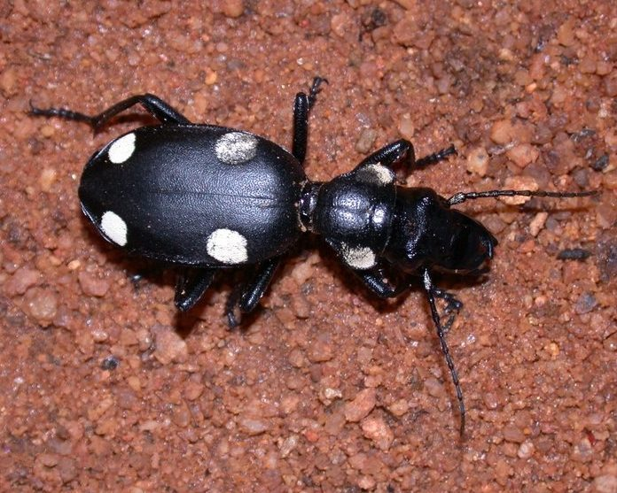

छह-चित्तीदार शिकारी भृंगSix-spotted Ground Beetle
Anthia sexguttata · Carabidae · INS-0244

- Scientific name वैज्ञानिक नाम
- Anthia sexguttata (Fabricius, 1775)
- Family कुल
- Carabidae
- Hindi हिंदी
- छह-चित्तीदार शिकारी भृंग
- Local names स्थानीय नाम
- six-spotted ground beetle, chhah-chittidar shikari bhrung, anthia sexguttata, six spotted ground beetle
- Status here यहाँ की स्थिति
- native
- Movement आवागमन
- Resident, here all year
- Known from कहाँ दर्ज
- Others have published records from the wider Awadh–Purvanchal plain, none yet from Basti–Ayodhya अवध–पूर्वांचल से दूसरों के प्रकाशित अभिलेख, बस्ती–अयोध्या से अभी नहीं
- IUCN IUCN
- not evaluated
- Review समीक्षा
- not yet reviewed
When to look कब देखें
Present all year. साल भर मौजूद।
Tell it apart from इनसे अलग पहचानें
छह-चित्तीदार शिकारी भृंग / Six-spotted Ground Beetle
Anthia sexguttata (Fabricius, 1775) — Carabidae
छह-चित्तीदार शिकारी भृंग — सूखी जमीन, पगडंडियों और झाड़ियों में पाया जाने वाला एक बहुत बड़ा, भारी और खूंखार शिकारी भृंग। इसका पूरा शरीर मखमली काले रंग का होता है जिस पर छह बड़े गोल सफेद धब्बे चमकते हैं — दो सीने पर और चार पीठ के पंखों पर। इसके पास उड़ने के लिए पंख नहीं होते, पर यह जमीन पर बहुत तेज दौड़ता है। खतरा महसूस होने पर यह अपनी पूंछ से तेजाब जैसी तीखी फुहार छोड़ता है जिससे आंखें जलने लगती हैं।
Quick Identification त्वरित पहचान
| Feature | Description |
|---|---|
| Habit | Very large, flightless ground beetle with massive mandibles |
| Coloration | Deep velvety black, adorned with six bold chalky-white circular spots |
| Thoracic spots | Two large white spots situated laterally on the heart-shaped pronotum |
| Elytral spots | Four large white spots on the fused wing covers (two basal, two subapical) |
| Chemical defense | Sprays concentrated formic acid from pygidial glands with remarkable accuracy |
Field tip: Look on dusty, unpaved village cart tracks and dry scrub edges during warm mornings; maintain a safe distance and never hold near the face.
हिंदी — कैसे पहचानें: मखमली काला विशाल शरीर, छह बड़े गोल सफेद धब्बे, बड़े जबड़े, और छूने पर तीखा तेजाबी स्प्रे छोड़ना।
Morphology आकारिकी
Adult description: A giant among Indian carabid ground beetles. Head huge, strongly constricted behind the eyes into a distinct neck; eyes moderately prominent. Mandibles enormous, sharply pointed, asymmetrical, strongly curved inwards with powerful basal crushers. Antennae long, thick, filiform, eleven-segmented. Pronotum cordiform (heart-shaped), broader than long, flattened dorsally, bearing two large circular white patches of dense scale-like setae on the lateral margins.
Elytra: Broad, fused along the suture, flightless (hindwings vestigial); densely striate and rugose, velvety black. Ornamented with four bold chalk-white circular spots: one near the base of each elytron and one near the apical third.
Defense glands: Pygidial glands at the abdominal apex produce a concentrated acidic discharge containing up to eighty percent formic acid, propelled under pressure.
हिंदी: इसका सिर और जबड़े बहुत बड़े होते हैं। सीने पर दो और पंखों पर चार सफेद गोल धब्बे होते हैं। इसके पिछले पंख जुड़े होते हैं जिससे यह उड़ नहीं सकता।
Behaviour & Ecology व्यवहार और पारिस्थितिकी
Anthia sexguttata is terrestrial, diurnal, and crepuscular. It runs actively across dry, unshaded soil, searching for prey with swift, powerful strides.
It is a formidable cursorial hunter. When tackling large prey like grasshoppers, snails, or hairy caterpillars, the beetle charges forward, grips the quarry in its massive mandibles, and crushes the exoskeleton with crushing force.
If cornered by a large animal, human, or dog, the beetle elevates its abdomen, turns its posterior towards the threat, and shoots a volatile stream of formic acid up to a distance of thirty to fifty centimetres. The spray causes intense burning pain, temporary blindness in mammalian eyes, and skin blisters.
हिंदी: यह जमीन पर दौड़कर बड़े टिड्डों, घोंघों और इल्लियों को अपने मजबूत जबड़ों से दबाकर मार डालता है। खतरा होने पर यह अपनी पूंछ उठाकर तेजाब की धार मारता है, जिससे आंखों में अंधापन और जलन हो सकती है।
Life Cycle / Phenology जीवन चक्र
| Season / Month | Stage & Activity |
|---|---|
| April–May (Summer) | Adults emerge from winter soil chambers and hunt actively along scrub tracks |
| June–July (Monsoon) | Mating takes place; females lay large eggs individually in deep soil burrows |
| August–September | Aggressive predatory grubs develop through three subterranean instars |
| October–November | Pupation occurs in subterranean earthen cells; peak adult surface roaming |
| December–March (Winter) | Overwintering as dormant adults deep beneath tree roots or rocks |
The life cycle is univoltine, with long-lived adults that can survive for two or more years in arid and semi-arid terrain.
हिंदी: यह कीड़ा कई साल तक जीवित रह सकता है। बरसात में मादा जमीन में अंडे देती है। इसके बच्चे भी जमीन के अंदर शिकारी जीवन जीते हैं और जाड़ों में सुस्त रहते हैं।
Host Plants or Prey आहार
- Living Prey: Voracious predator on large grasshoppers, mole crickets, snails, caterpillars, and scorpions.
- Scavenging: Readily feeds on dead vertebrates, squashed amphibians on roads, and animal carrion.
- Vegetative Associations: Strictly non-phytophagous; utilizes dry thorny hedgerows and scrub solely for daytime shade.
हिंदी: यह टिड्डों, झींगुरों, घोंघों और बिच्छुओं को मारकर खाता है। यह मरे हुए जानवरों का मांस भी खा लेता है।
Predators / Natural Enemies शत्रु
- Raptorial Birds: Large birds of prey and mongooses occasionally attack adults, flipping them quickly to avoid chemical spray.
- Parasitoids: Phorid flies and tachinids parasitize foraging adults.
- Avoidance: Most domestic dogs and predatory mammals avoid the beetle after experiencing its painful eye spray.
हिंदी: नेवले और बड़े शिकारी पक्षी इसे पीछे से पलटकर मारते हैं ताकि इसके तेजाब से बच सकें। कुत्ते इसके स्प्रे के डर से इसके पास नहीं जाते।
Agricultural / Human Relevance कृषि प्रासंगिकता
- Apex invertebrate biocontrol: Feeds on major agricultural pests including large grasshoppers, cutworms, and armyworms in field borders.
- Chemical hazard: The defensive formic acid spray causes severe ocular pain, corneal ulceration, and skin irritation if sprayed near the face. Caution: never handle or bend closely over this beetle.
- Traditional folklore: Widely respected in Awadh village lore as an untouchable 'acid bug' that must not be provoked.
हिंदी: यह खेतों के बड़े टिड्डों और नुकसानदेह कीड़ों को खाता है, पर इसका तेजाबी स्प्रे इंसान की आंखों के लिए बहुत खतरनाक होता है। इसे कभी हाथ से नहीं पकड़ना चाहिए।
Expected Locally स्थानीय रूप से अपेक्षित
Not a field record. Written from published accounts for eastern Uttar Pradesh. No confirmed local sighting yet — if you have seen it, that is what the atlas needs.
अभी तक स्थानीय पुष्टि नहीं। यह विवरण प्रकाशित स्रोतों से है, किसी अवलोकन से नहीं।
Expected across the dry scrublands, ravine edges, unpaved cart tracks, and thorn borders of Basti, Ayodhya, and Sant Kabir Nagar wherever dry, uncultivated sandy terrain exists. GBIF holds published records from the wider Awadh–Purvanchal plain, none yet from Basti–Ayodhya. A first local record would be a photograph of an adult taken from a safe distance showing the six white dorsal spots, submitted through the About page.
Distribution वितरण
Global range: Native across South Asia, including India, Pakistan, Nepal, and Sri Lanka.
In India: Widely distributed throughout northern India, the Gangetic plain, Rajasthan, Central India, and the Deccan (Andrewes 1929).
In Uttar Pradesh: Distributed across dry scrub zones, ravines, and agricultural fallows.
In Basti district / eastern UP: Expected in dry wasteland patches and elevated sandy tracts.
हिंदी: यह भृंग भारत, पाकिस्तान और नेपाल के सूखे और रेतीले इलाकों में पाया जाता है। उत्तर प्रदेश के लगभग सभी मैदानी और बीहड़ वाले इलाकों में यह उपस्थित है।
Research Questions शोध प्रश्न
- What is the chemical concentration of formic acid in the defensive spray of Awadh Anthia populations? / अवध के इन भृंगों के रक्षात्मक स्प्रे में फार्मिक एसिड की मात्रा कितनी होती है?
- What are the primary vertebrate predators capable of overcoming its chemical spray? / कौन से स्थानीय शिकारी जीव इसके तेजाबी स्प्रे से बचकर इसका शिकार कर लेते हैं?
- What is the daily wandering distance covered by an adult hunting across rural tracks? / एक वयस्क भृंग शिकार की तलाश में रोजाना कितनी दूरी तय करता है?
- How does soil moisture determine burrowing and egg-laying site selection in agricultural fallows? / खेतों की खाली जमीन में अंडे देने के लिए यह किस प्रकार की नमी चुनता है?
- Can village children safely observe its six white spots from a distance without approaching too close? / क्या स्कूली बच्चे बिना पास गए दूर से सुरक्षित रहकर इसके छह सफेद धब्बे देख सकते हैं?
Similar Species मिलती-जुलती प्रजातियाँ
| Species | How to tell apart | हिंदी |
|---|---|---|
| Eight-spotted Tiger Beetle (Cicindela octonotata) | Smaller; metallic blue-green; eight spots; winged and flies rapidly | छोटा, उड़ने में सक्षम, नीला-हरा रंग और आठ धब्बे |
| Two-coloured Tiger Beetle (Cicindela bicolor) | Much smaller; coppery head and unspotted blue elytra; winged | बहुत छोटा, तांबई सिर और बिना धब्बे वाले नीले पंख |
| Anthia duodecimguttata | Possesses twelve pale spots rather than six; occurs in extreme arid zones | छह की जगह बारह धब्बे, केवल अत्यंत सूखे रेगिस्तानी इलाकों में |
Field rule: A very large flightless velvety-black ground beetle with six bold white spots and massive mandibles that sprays acid identifies Anthia sexguttata.
Taxonomy & Classification वर्गीकरण
Original description. Described by Johan Christian Fabricius in 1775 as Carabus sexguttatus in Systema Entomologiae.
Subspecies. Monotypic across mainland India; no subspecies are currently recognized.
Family and order placement. Placed in the ground beetle family Carabidae, subfamily Anthiinae (monster ground beetles), in the order Coleoptera.
IUCN status rationale. Not evaluated on the IUCN Red List; widely distributed across the Indian subcontinent with resilient terrestrial populations.
हिंदी: जोहान क्रिश्चियन फैब्रिकियस ने 1775 में इसका पहला वैज्ञानिक विवरण दिया था। यह कैराबिडी कुल और एंथाइनी उपकुल का सदस्य है।
Photo Gallery फोटो गैलरी
No photos yet — add field photos to media/species/six_spotted_ground_beetle/ and run node scripts/sync_photos.js.
Photos needed आवश्यक फोटो
- [ ] Adult crawling on dry ground showing six white spots (सूखी जमीन पर दौड़ता छह-चित्तीदार भृंग)
- [ ] Frontal view showing massive mandibles (बड़े जबड़ों का सामने से चित्र)
- [ ] Specimen in threat posture with raised abdomen (खतरे की मुद्रा में पूंछ उठाए हुए कीड़ा)
References संदर्भ
- Fabricius, J.C. (1775). Systema Entomologiae. Flensburg and Leipzig.
- Andrewes, H.E. (1929). The Fauna of British India, including Ceylon and Burma: Coleoptera: Carabidae, vol. 1: Carabinae, p. 48. Taylor and Francis, London.
- Andrewes, H.E. (1930). Catalogue of Indian Insects: Part 18, Carabidae. Government of India, Calcutta.
- Lorenz, W. (2005). Systematic List of Extant Ground Beetles. Tutzing, Germany.
- GBIF Occurrence Data — Anthia sexguttata (Fabricius, 1775), India (2025).
Source file: species/fauna/insects/six_spotted_ground_beetle.md